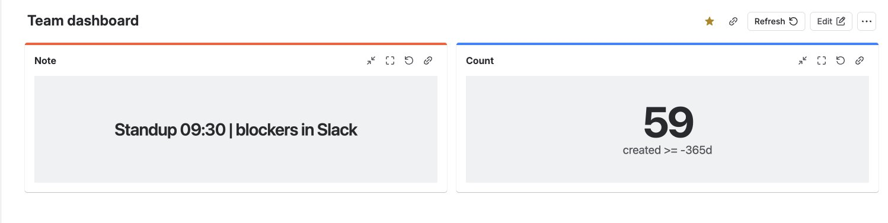
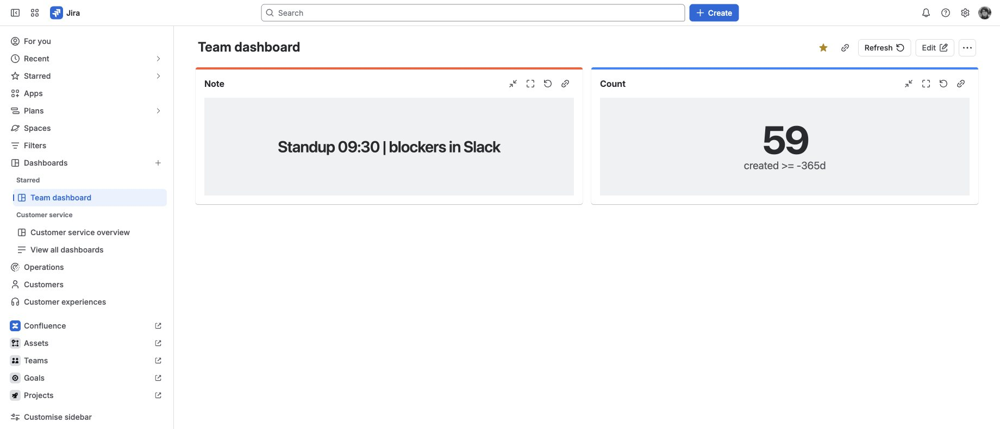
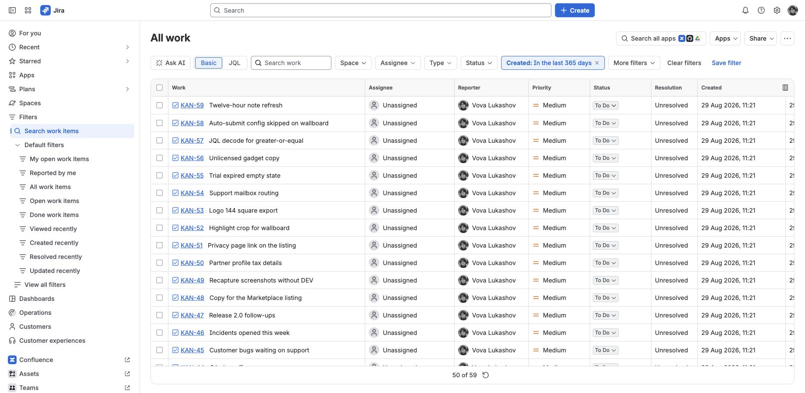
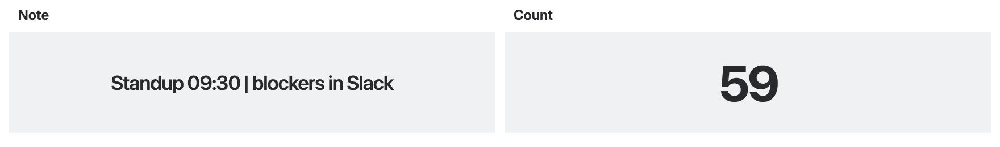

A note and a count
that stay on the board.
Two Jira Cloud gadgets. Type a message, or point Count at JQL. Reload and wallboard keep them.
Get it on Marketplace Email support

Put them on a dashboard
-
Install and start the trial
Open the Marketplace listing for DashKeep for Jira and install it on your Jira Cloud site. In Manage apps, start the trial. Sites with 10 users or fewer stay on the free tier. Billing is through Atlassian.
-
Add Note or Count
Open a dashboard. Choose Edit. Add gadget. Search for DashKeep. Add Note or Count. Production titles are those two words. Skip anything labeled DEVELOPMENT.
-
Write a note, then reload
In Note, type a standup, an SLA reminder, or a wallboard message. Save. Reload the dashboard. The text is still there because Jira stores it as gadget configuration.

Same dashboard, same text, after a reload. -
Count work items, then open the list
In Count, set a JQL query. A bounded example:
created >= -365d. Save. The gadget shows how many work items match. Click the number to open that list in Jira’s issue navigator.
Click the count. Same query, Jira’s own list. -
View as wallboard
Use View as wallboard when you want TV-size type. Give Note and Count different gadget highlight colors if both should stay on screen. Use the same color if you want them to rotate.

Different highlight colors keep both tiles on one wallboard.
What this is not
DashKeep is not a chart builder. It does not replace eazyBI, Rich Filters, or sprint reports.
- Counts run as the viewing user (
read:jira-work). - Note text and JQL live in Jira gadget storage. There is no vendor database.
- The app runs on Atlassian Forge. No remotes, no egress to vendor servers.